the logify project
Duration
Jan-Apr 2022
Team
Strategist #2
Strategist #3
At USC, I worked in a team of three to utilize human-centered design methodologies to create a prototype that addresses an issue faced by the active older adults (ages 60+) community.
My team and I participated in brainstorming sessions to develop “how might we”, problem, and opportunity statements, rapid prototyping sessions, and multiple rounds of user interviews to uncover user pain points and develop a solution that best addressed a need expressed by our user.
In our initial conversations with older adults, we identified that a significant number experienced feelings of loneliness during and after the pandemic, and found it challenging to maintain regular connections with their families. As a result, our team narrowed our focus to improving intergenerational connections, leading us to develop the following opportunity statement:

As a group, we conducted a total of 105 interviews with our two user groups — older adults and college students — and uncovered the following insights:
For older adults:
For students:
As a result of these key insights from our user interviews, our team developed The Logify Project -- an automated text messaging service targeted towards older adult grandparents and college-aged grandchildren.
The service aims to foster intergenerational connections by facilitating authentic communication between grandparents and college-aged grandchildren.
How it works:
1
Grandchildren are prompted 3x a week to share updates using photos and captions
2
Logify complies responses into a monthly newspaper summarizing grandchildrens' activities
3
Newspaper is delivered physically to grandparents in a photo-based newsletter format and is also available for download on the Logify website
How Logify addresses our personas' key pain points:
For college students:
Eliminating one extra click
With a simple text and image response to automated prompts, they are easily able to share updated without having to download an additional application or login to social media.
For older adults:
Delivery of updates in a familiar, passive format
Updates are delivered at a regular cadence, in a tangible format they are familiar with, all without actively asking grandchildren for updates.
In short, Logify was designed as a means of maximizing service convenience and value for both target users, to not only foster regular connection between both generations, but also spark conversations to be continued instead of started at family gatherings.